ID: dog-train-n02114548_7558/felzenszwalb_masked_softmax
Accuracy: 0.689
Mean
Recall 0.689
Precision 0.691
F1 0.686
Target
Recall 0.456
Precision 0.671
F1 0.543
Orig Pred
Recall 0.538
Precision 0.564
F1 0.551
 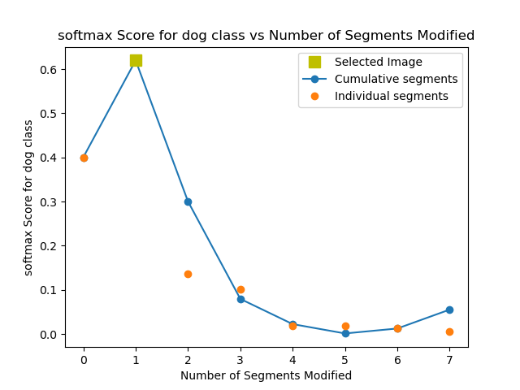
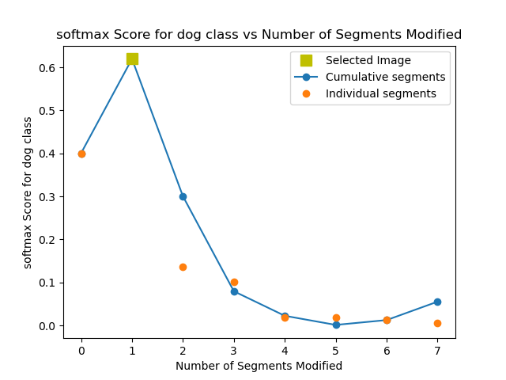

ID: dog-train-n01322508_12502/felzenszwalb_gaussian_softmax
Accuracy: 0.688
Mean
Recall 0.688
Precision 0.692
F1 0.685
Target
Recall 0.466
Precision 0.661
F1 0.546
Orig Pred
Recall 0.562
Precision 0.65
F1 0.603
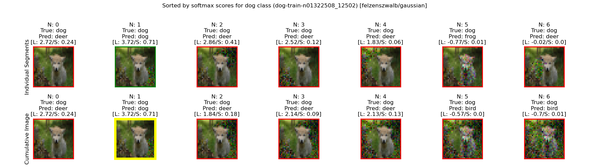 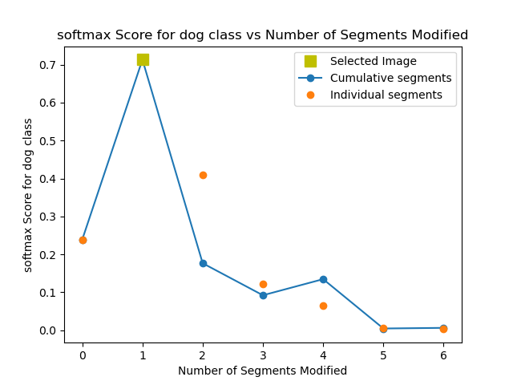 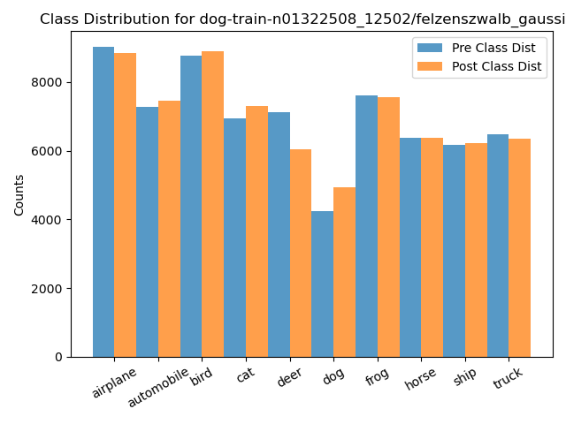ID: dog-train-n02110806_2781/felzenszwalb_masked_softmax
Accuracy: 0.688
Mean
Recall 0.688
Precision 0.689
F1 0.684
Target
Recall 0.508
Precision 0.614
F1 0.556
Orig Pred
Recall 0.505
Precision 0.583
F1 0.542


ID: dog-train-n02117900_378/felzenszwalb_gaussian_softmax
Accuracy: 0.688
Mean
Recall 0.688
Precision 0.691
F1 0.685
Target
Recall 0.475
Precision 0.641
F1 0.546
Orig Pred
Recall 0.532
Precision 0.554
F1 0.543


ID: dog-train-n02114367_18628/felzenszwalb_gaussian_softmax
Accuracy: 0.687
Mean
Recall 0.687
Precision 0.691
F1 0.683
Target
Recall 0.435
Precision 0.692
F1 0.534
Orig Pred
Recall 0.51
Precision 0.581
F1 0.543


ID: dog-train-n02119789_2524/felzenszwalb_gaussian_softmax
Accuracy: 0.685
Mean
Recall 0.685
Precision 0.696
F1 0.684
Target
Recall 0.449
Precision 0.676
F1 0.539
Orig Pred
Recall 0.55
Precision 0.657
F1 0.599
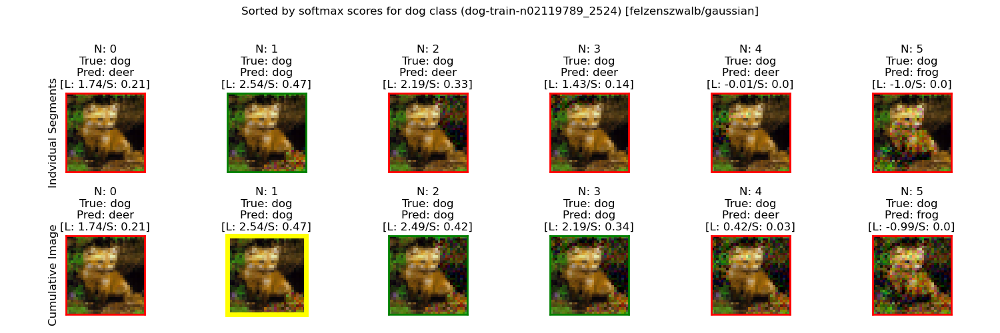 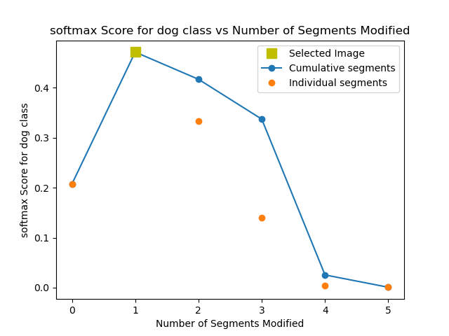
ID: dog-train-n02110341_2396/felzenszwalb_masked_softmax
Accuracy: 0.685
Mean
Recall 0.685
Precision 0.691
F1 0.681
Target
Recall 0.576
Precision 0.521
F1 0.547
Orig Pred
Recall 0.408
Precision 0.678
F1 0.509

 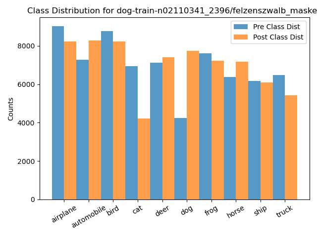
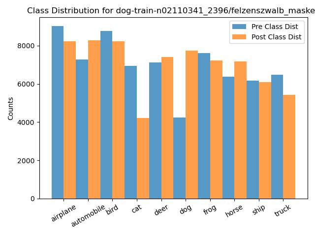
ID: dog-train-n02114367_18628/felzenszwalb_masked_softmax
Accuracy: 0.685
Mean
Recall 0.685
Precision 0.691
F1 0.681
Target
Recall 0.447
Precision 0.685
F1 0.541
Orig Pred
Recall 0.503
Precision 0.588
F1 0.542
 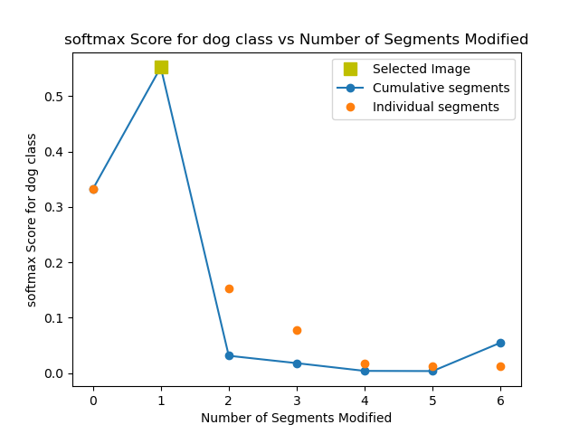
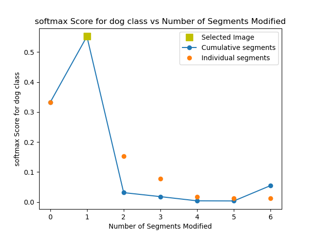

ID: dog-train-n02113186_13534/felzenszwalb_gaussian_softmax
Accuracy: 0.684
Mean
Recall 0.684
Precision 0.691
F1 0.682
Target
Recall 0.475
Precision 0.628
F1 0.541
Orig Pred
Recall 0.653
Precision 0.887
F1 0.752


ID: dog-train-n02114548_7558/felzenszwalb_gaussian_softmax
Accuracy: 0.684
Mean
Recall 0.684
Precision 0.691
F1 0.679
Target
Recall 0.572
Precision 0.549
F1 0.56
Orig Pred
Recall 0.366
Precision 0.708
F1 0.483


ID: dog-train-n02108089_2250/felzenszwalb_masked_softmax
Accuracy: 0.683
Mean
Recall 0.683
Precision 0.69
F1 0.679
Target
Recall 0.495
Precision 0.628
F1 0.554
Orig Pred
Recall 0.818
Precision 0.686
F1 0.746
 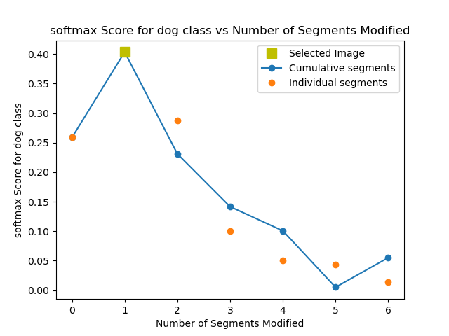
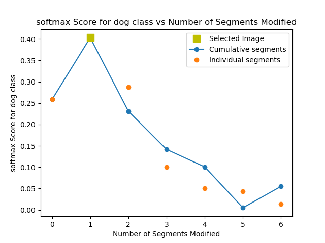

ID: dog-train-n02112018_292/felzenszwalb_masked_softmax
Accuracy: 0.682
Mean
Recall 0.682
Precision 0.69
F1 0.677
Target
Recall 0.473
Precision 0.663
F1 0.552
Orig Pred
Recall 0.414
Precision 0.681
F1 0.515
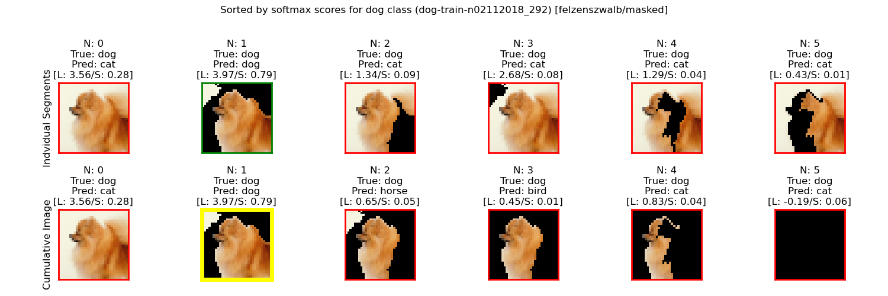

ID: dog-train-n02117135_2677/felzenszwalb_masked_softmax
Accuracy: 0.68
Mean
Recall 0.68
Precision 0.695
F1 0.676
Target
Recall 0.468
Precision 0.647
F1 0.543
Orig Pred
Recall 0.411
Precision 0.801
F1 0.544

 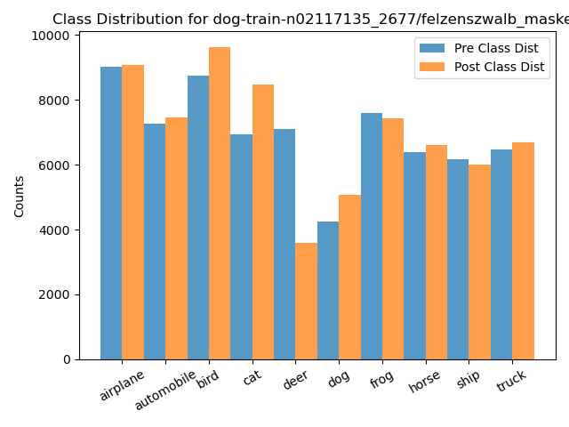
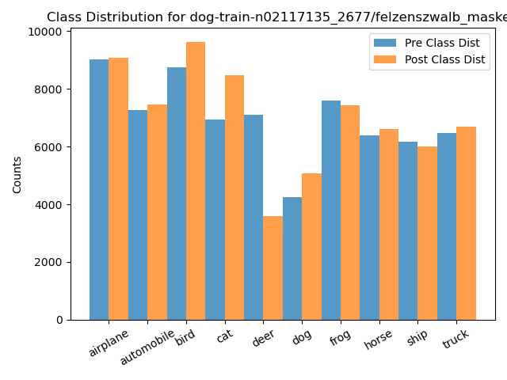
ID: dog-train-n02083346_3775/felzenszwalb_masked_softmax
Accuracy: 0.68
Mean
Recall 0.68
Precision 0.689
F1 0.676
Target
Recall 0.498
Precision 0.627
F1 0.555
Orig Pred
Recall 0.73
Precision 0.844
F1 0.783


ID: dog-train-n02108089_2250/felzenszwalb_gaussian_softmax
Accuracy: 0.68
Mean
Recall 0.68
Precision 0.691
F1 0.679
Target
Recall 0.442
Precision 0.652
F1 0.527
Orig Pred
Recall 0.748
Precision 0.757
F1 0.752


ID: dog-train-n02114367_15682/felzenszwalb_masked_softmax
Accuracy: 0.679
Mean
Recall 0.679
Precision 0.703
F1 0.676
Target
Recall 0.454
Precision 0.666
F1 0.54
Orig Pred
Recall 0.388
Precision 0.824
F1 0.527


ID: dog-train-n02084861_13239/felzenszwalb_masked_softmax
Accuracy: 0.675
Mean
Recall 0.675
Precision 0.693
F1 0.665
Target
Recall 0.475
Precision 0.656
F1 0.551
Orig Pred
Recall 0.298
Precision 0.807
F1 0.435


ID: dog-train-n02084861_6547/felzenszwalb_masked_softmax
Accuracy: 0.667
Mean
Recall 0.667
Precision 0.711
F1 0.661
Target
Recall 0.716
Precision 0.384
F1 0.5
Orig Pred
Recall 0.215
Precision 0.828
F1 0.342
 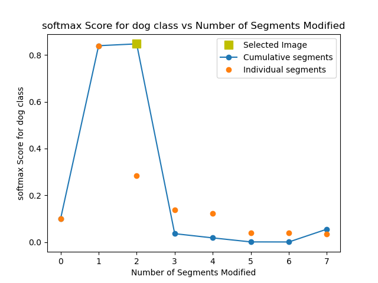
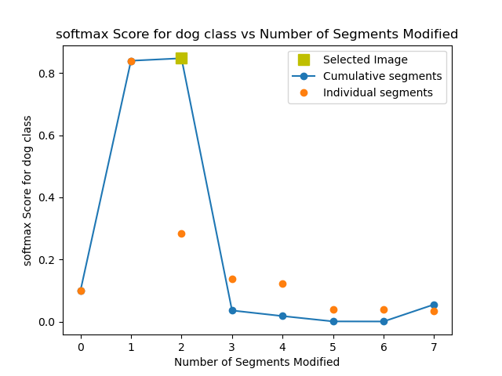

ID: dog-train-n02112826_4815/felzenszwalb_masked_softmax
Accuracy: 0.652
Mean
Recall 0.652
Precision 0.606
F1 0.622
Target
Recall 0.628
Precision 0.41
F1 0.496
Orig Pred
Recall 0.0
Precision 0.0
F1 0.0
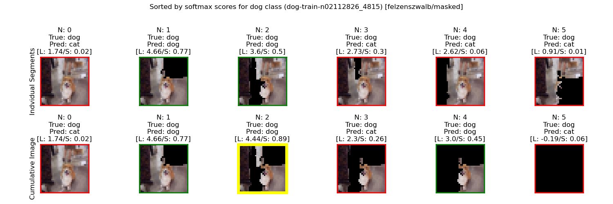

ID: dog-train-n02114548_3866/felzenszwalb_masked_softmax
Accuracy: 0.65
Mean
Recall 0.65
Precision 0.656
F1 0.623
Target
Recall 0.674
Precision 0.377
F1 0.484
Orig Pred
Recall 0.003
Precision 0.418
F1 0.007
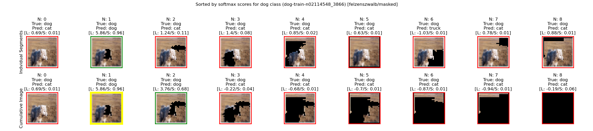

ID: dog-train-n02104523_6545/felzenszwalb_masked_softmax
Accuracy: 0.645
Mean
Recall 0.645
Precision 0.629
F1 0.617
Target
Recall 0.576
Precision 0.452
F1 0.507
Orig Pred
Recall 0.0
Precision 0.231
F1 0.001
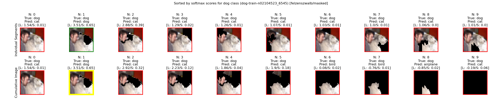

ID: dog-train-n02112018_6624/felzenszwalb_masked_softmax
Accuracy: 0.645
Mean
Recall 0.645
Precision 0.606
F1 0.615
Target
Recall 0.553
Precision 0.49
F1 0.52
Orig Pred
Recall 0.0
Precision 0.0
F1 0.0
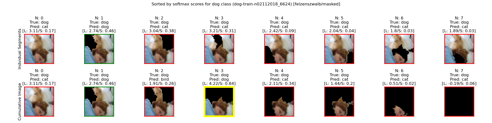

ID: dog-train-n01322508_12502/felzenszwalb_masked_softmax
Accuracy: 0.639
Mean
Recall 0.639
Precision 0.606
F1 0.614
Target
Recall 0.625
Precision 0.355
F1 0.453
Orig Pred
Recall 0.0
Precision 0.0
F1 0.0
 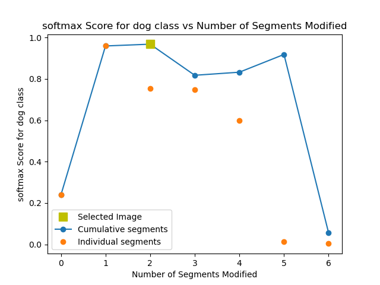
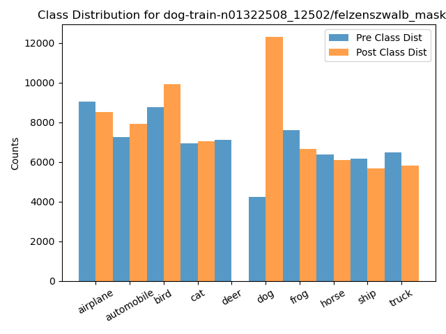
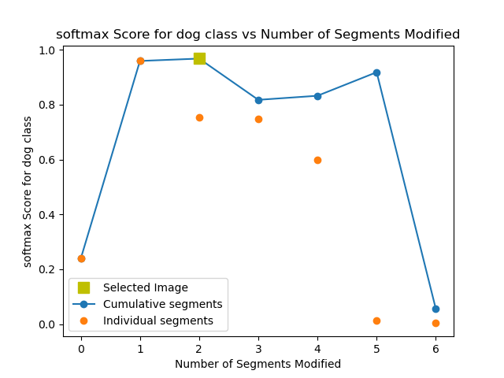
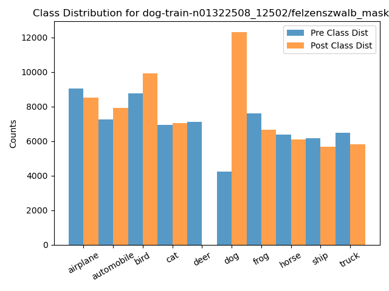
ID: dog-train-n02108089_931/felzenszwalb_masked_softmax
Accuracy: 0.635
Mean
Recall 0.635
Precision 0.681
F1 0.622
Target
Recall 0.581
Precision 0.35
F1 0.437
Orig Pred
Recall 0.137
Precision 0.952
F1 0.24
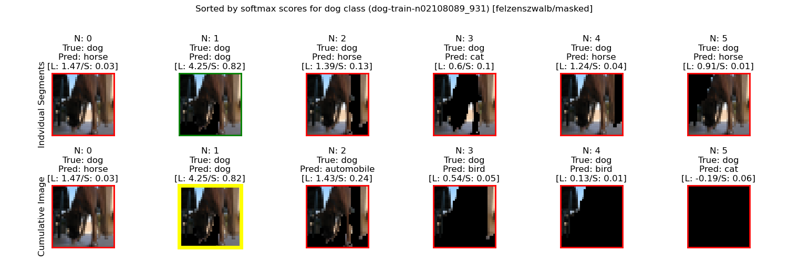 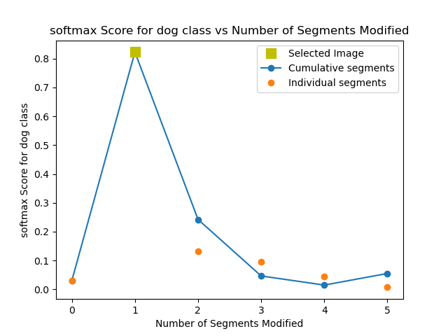
ID: dog-train-n02114100_6249/felzenszwalb_masked_softmax
Accuracy: 0.617
Mean
Recall 0.617
Precision 0.587
F1 0.591
Target
Recall 0.452
Precision 0.655
F1 0.535
Orig Pred
Recall 0.0
Precision 0.0
F1 0.0
 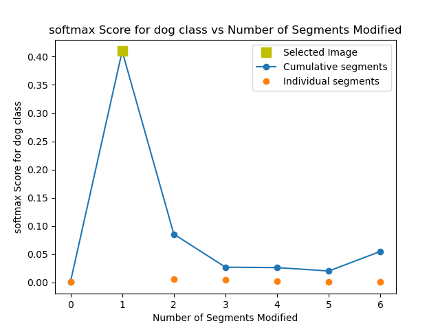
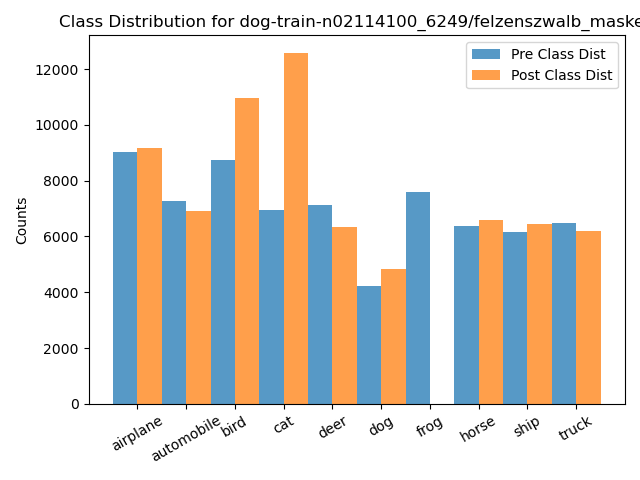
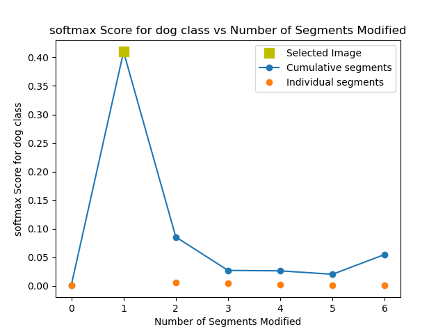
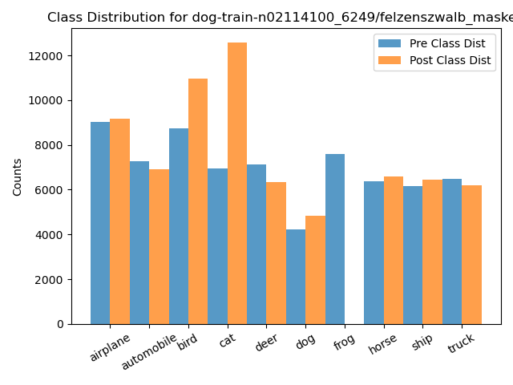
ID: dog-train-n02084732_5331/felzenszwalb_masked_softmax
Accuracy: 0.616
Mean
Recall 0.615
Precision 0.688
F1 0.593
Target
Recall 0.708
Precision 0.302
F1 0.424
Orig Pred
Recall 0.376
Precision 0.686
F1 0.486
 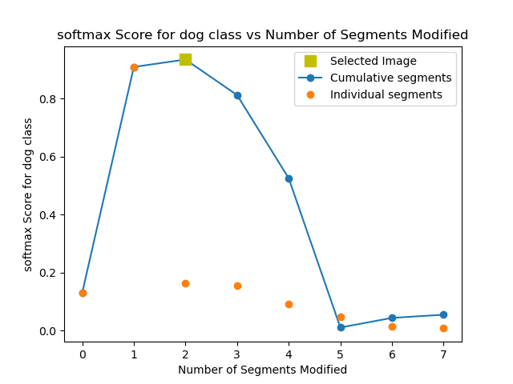
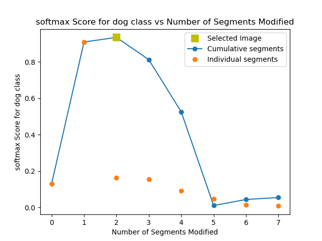

ID: dog-train-n01322508_4536/felzenszwalb_masked_softmax
Accuracy: 0.476
Mean
Recall 0.476
Precision 0.556
F1 0.454
Target
Recall 0.921
Precision 0.175
F1 0.294
Orig Pred
Recall 0.0
Precision 0.0
F1 0.0

 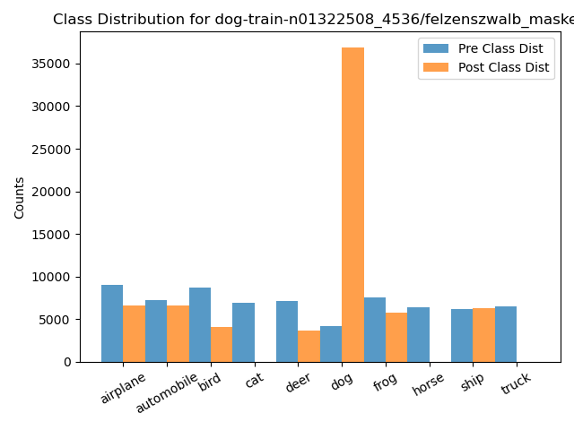
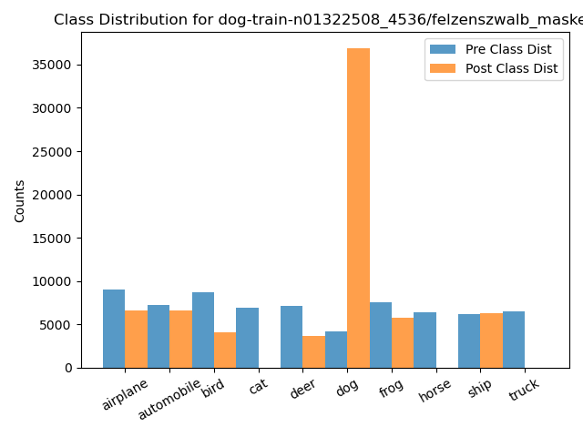